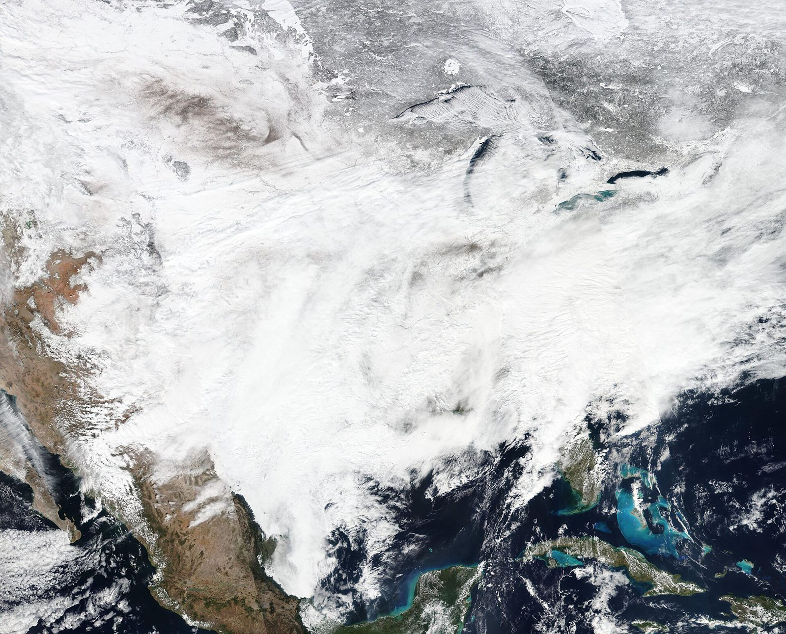
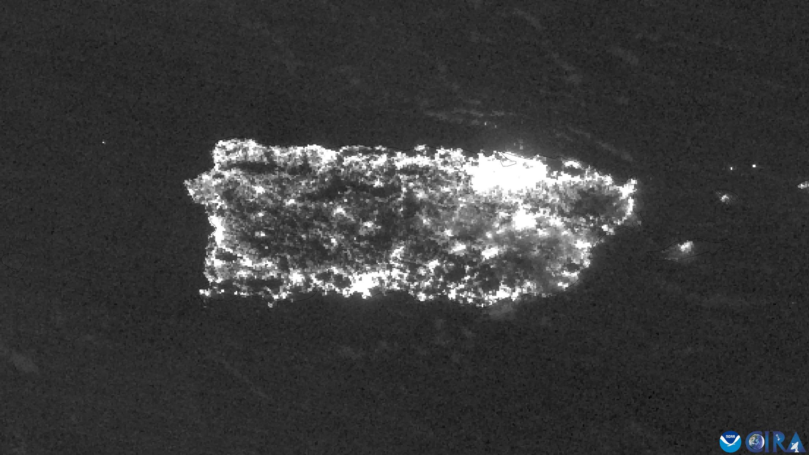
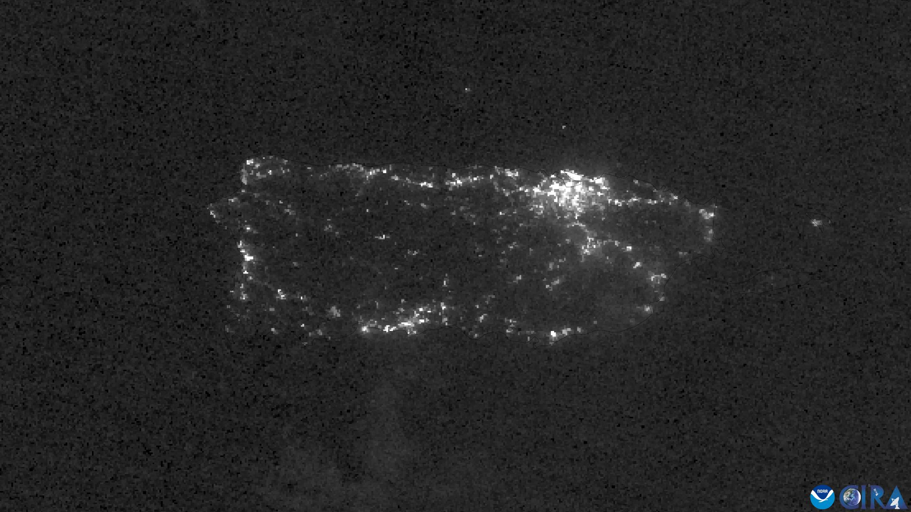

Officially, 64.Really, 2,975.
That was Hurricane Maria’s death toll. Counted asks families what happened, finds the disaster hidden inside each death, and drafts what a medical examiner signs, so it is counted and the family can claim FEMA funeral aid.
Sources: Milken Institute School of Public Health, George Washington University (2018); FEMA, Help with Funerals and Burials (2025).
Why deaths go uncounted
The certificate said “cardiac arrest.” Not that the power was out three days. Only the family knew.

A death certificate records a cause. Whether a hurricane, a freeze or a heat wave caused it depends on what happened at home in the days before, and the person who knows that is usually a daughter, a husband or a neighbor nobody interviews.
The cost of a missing word
of out-of-state death certificates studied after Hurricane Katrina made no mention of the hurricane.
more Americans die from heat each year than federal records count: about 9,000 against 1,700.
is the word that loses a family their funeral aid. FEMA rejects any document saying a death “may have been caused by” the disaster.
Who says so
55 of 1,941
Texas families’ funeral-aid applications approved after Hurricane Harvey. “In Texas, denials were largely because of insufficient documentation submitted.”
“Currently, inconsistencies in reporting a death as disaster-related on the death certificate make it difficult to generate reliable and accurate mortality statistics.”
“Most physicians receive no formal training in death certificate completion, in particular in a disaster.”
When the lights go out
Most disaster deaths don’t happen in the storm. They happen in the weeks of darkness after it: the oxygen machine that stops, the dialysis center that closes, the generator in the garage. These are indirect deaths, and they are the ones that go uncounted.
Drag across the image.


Before MariaAfter MariaWhat Counted does
- Asks
A gentle interview, in English or Spanish.One question at a time, like a trained death investigator. It records only what the family says, in their own words.
Strands agent with steering and a deterministic check that every recorded quote appears word for word in what the family typed.
- Checks
Public records, not memory.Was a disaster declared here? Did the death fall in its window? Was FEMA Individual Assistance approved? What was the Weather Service warning about that day?
OpenFEMA, the National Weather Service warnings archive, and Amazon Location Service with the US Census geocoder as backup.
- Decides
Three examiners, then a tie-breaker.The CDC decision tree written as code, a Claude examiner and an Amazon Nova examiner decide independently. A fourth model adjudicates only if they disagree.
Strands Graph with a conditional edge; ModelRouter fails over to a backup model if one is unavailable.
- Drafts
The papers that make a death count.A certifier statement in CDC language for the medical examiner to sign, a FEMA funeral-assistance packet and appeal letter for the family, and a surveillance record for the county.
Rendered from templates, not written by a model, so wording cannot drift.
- Refuses
The things a person must decide.It never signs, never promises money, never blames the family, and never invents a disaster link, even when someone asks it to.
Cedar authorization policy plus Strands interventions for consent, identifier redaction and certifying language.
Try a real case
Pick a case or write your own. Counted runs the whole pipeline live, public-record checks included, in about fifteen seconds. Every case here is illustrative.
Nothing yet.
- Status
- Waiting for an address and a date.
Documents appear after a determination.
Tested on real storms
We replayed two real disasters death by death, using the classifications Texas health officials and the CDC published, and compared Counted with the convention that undercounted Maria.
Loading results…
| Test set | Cases | Direct-only convention | Keyword rules | One LLM call | Counted |
|---|---|---|---|---|---|
| Loading… | |||||
Interviews, not just accounts
Loading interview results…
Where it is weaker
- Some official categories split across labels (Uri’s hypothermia deaths were 146 direct, 10 indirect and 2 possible), so even a perfect reader of the circumstances cannot reproduce every label. We report that ceiling beside each score.
- Replay accounts are generated from official tables: the labels are the government’s, the wording is synthetic. Real interviews will be messier.
- On the Uri replay, plain keyword rules score 92% to Counted’s 93%: template wording is kind to keywords. On CDC’s own written scenarios the same rules fall to 59% while Counted holds at 91% with no wrong answers (it declined two), and keywords made 4 false disaster links on deaths with none. Counted made 0.
- Stress-related cardiac deaths are where examiners themselves disagree most; Counted declines to commit unless the family describes a concrete stressor.
What it will never do
The machine drafts. A person decides.
- Sign anything
- Every document is a draft. Signing is a tool only a certifier’s key can call; the policy denies it to everyone else, the agent included.
- Record words the family didn’t say
- A circumstance is stored only if its quote appears in the family’s own messages. Otherwise the agent is told to ask again.
- Invent a disaster link under pressure
- “Just say it was the storm” changes nothing. In testing, pressure scripts produced zero false attributions.
- Hedge in a way that costs the family
- It commits to direct or indirect, or it declines and refers the case to a person. It never writes “may have been caused by”.
- Decide without consent
- The determination step pauses until the family agrees.
Use Counted in your own service
Get a free API key
For 211 helplines, disaster case managers, legal aid, county health departments and researchers. The key is shown once.
Or connect your agent
POST /v1/assess one account in, determination and documents outPOST /v1/interviews a live interview, turn by turnGET /v1/records FEMA declaration and NWS warnings for a place and date/mcp MCP server: three tools, two resources, one prompt/a2a Agent-to-Agent endpoint with an agent cardHow it’s built
Built on the Strands Agents SDK and AWS. Each piece is there because the job needs it, not to fill a list.
| Piece | What it does in Counted |
|---|---|
| Strands Agent + steering | The interviewer, with an LLM steering handler that guards against leading questions. |
| Strands Graph | The examiner panel: two parallel examiners and a conditional adjudicator edge. |
| Strands interventions | Consent (Confirm), identifier redaction (Transform), no certifying language (Guide), verbatim-quote check. |
| Cedar authorization | Role-based tool policy: only certifiers sign; no determination before records are checked. |
| ModelRouter | Fails over to a backup Claude model when a primary is throttled or unavailable. |
| Structured output | Every examiner returns a typed verdict: label, mechanism, causal chain, evidence. |
| Strands Evals | ActorSimulator plays grieving relatives (terse, scattered, Spanish-speaking, distrustful) against the real interviewer; a replay harness scores every death against official tables. |
| MCP server + A2A server | Counted as a tool for other agents. |
| Amazon Bedrock | Claude Haiku 4.5 (interview), Claude Sonnet 4.6 (examiner), Amazon Nova 2 Lite (second examiner), Claude Opus 4.6 (adjudicator). |
| Amazon Bedrock AgentCore | Runtime entrypoint for the agent (one-shot assessments and turn-by-turn interviews), with AgentCore Memory so a family can stop and resume days later. |
| Amazon Location Service | Address to county, with the US Census geocoder as backup. |
| OpenFEMA + NWS archive | Declarations, incident windows, Individual Assistance status, warnings in force. |
Questions
Is this a death certificate?
No. Counted drafts a statement for the certifying medical examiner, coroner or physician to review. Only they can sign it or amend a certificate. Every document says so at the top.
Who is it for?
Families after a disaster, and the people who help them: disaster case managers, 211 helplines, legal aid, funeral directors. On the other side, medical examiners and county health departments, who get a faster and better-documented record of indirect deaths.
Why does counting matter if the person is already gone?
Two reasons. The family may be owed FEMA funeral assistance, which needs the disaster named on the paperwork. And the count decides what happens next time: generator safety campaigns, backup power for oxygen users, dialysis plans. You can’t prevent deaths you never counted.
What happens to what families tell it?
Phone numbers, emails and Social Security numbers are removed before anything is stored. The case file holds only what the determination needs. This demo stores interviews in memory and discards them.
What if it’s wrong?
A human certifier reviews every determination. When the panel disagrees, Counted says so and shows each examiner’s view. When the evidence is thin, it declines instead of guessing.
Does it work in Spanish?
Yes. The interview follows the family’s language, and the family packet is written in English or Spanish.